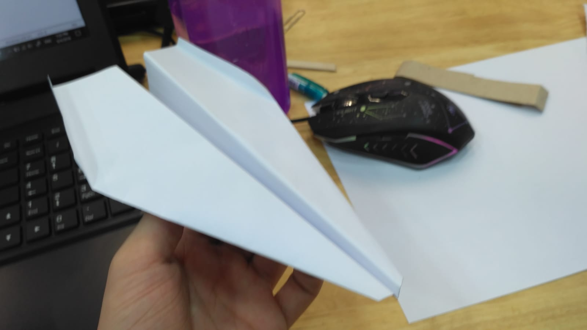
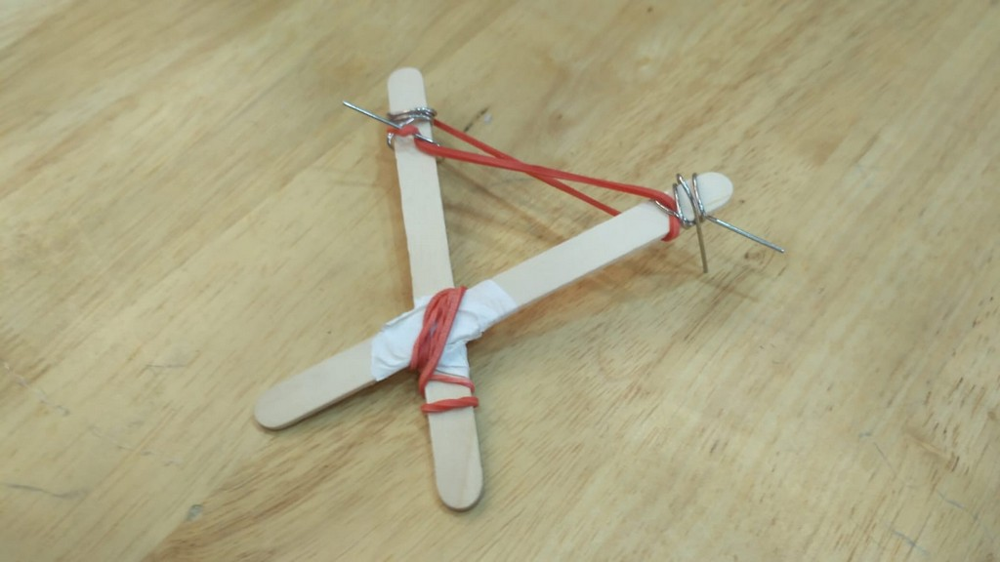
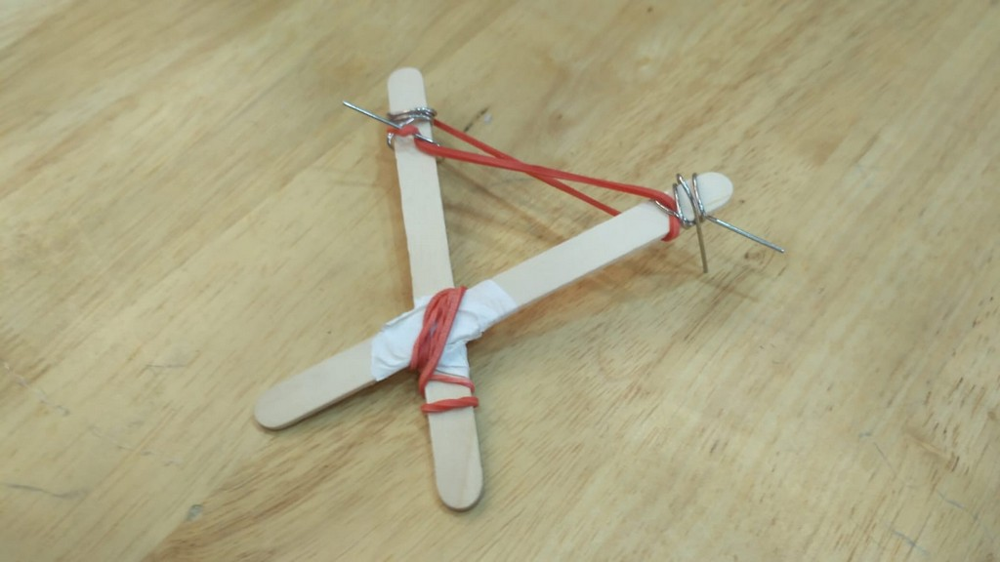
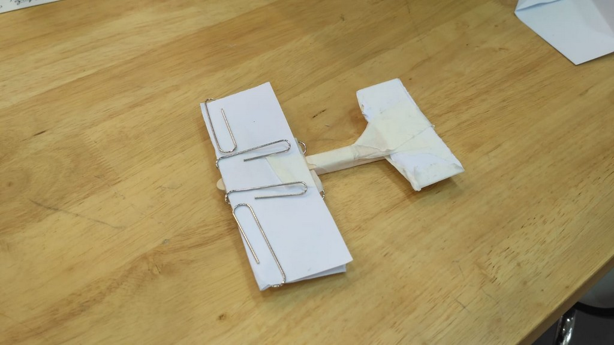
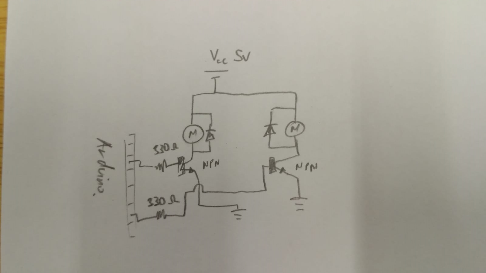
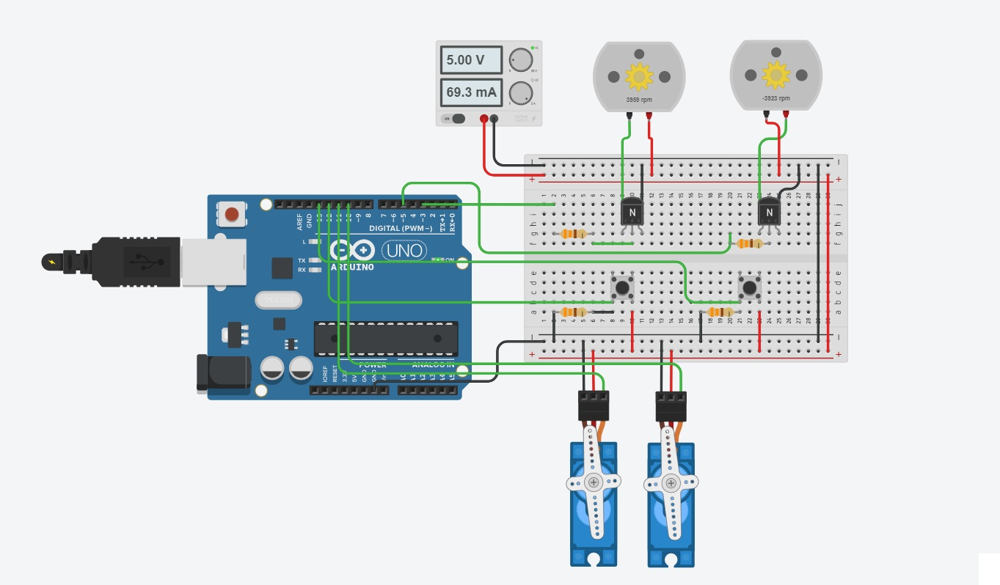

Flying Paperwork
Mission Statement
Be able to send a A4 sized paper or smaller and sent it through air. Paper must arrive in a neat fashion. Must have accuracy and sometimes distance. Must all be automated
Phase 1
Design 1
Using a paper airplane to shoot the message through air
Using the paper plane instruction for "Flat Head" we made a paper plane for message transportation.
During first testing, we realised that the airplane design actually made it pitched too high. So, we weight the front of the paper plane using metal paper clip
With this it can fly nice and straight
Design 2
Shooting a bullet like object through the air to send the message
For this, we thought of the weapon of choice that we use to use during our secondary school time, a thickly folded paper propelled using rubber band normally used to cause our peers to be in deep pain and hatred towards us. However, we think this idea could be useful for tranferring the message through the air as it should have enough force to cut through the air(since it can harm human too)
 

Design 3
Using a glider to carry the message through the air
This is our very first design on glider to see how it would fly, it is just a very simple design with no planning at all. We just want to try whether a glider shape using paper and popsicle stick could be used
After testing, it failed horribly but decided that with a better planning and design, the glider should be able to send our message through the air
Phase 2 - Launcher
Resources
Launcher Component
Alot of cardboard
Masking Tape
Tape
2x bottle cap
Rubberband
Sweat and Tears
Electronics Component
2x DC Motor
2x Servo Motor
1x Servo Motor, we are only allowed one
1x Breadboard
2x NPN Transistor
3x 8kΩ Resistor
2x Diode
3x Push Button
1x Arduino Uno
Wires
Launcher Design
After coming up with some medium that we can use to hold our messages, we start coming up with design for our launcher
Since we need to have either accuracy or distance, we design our launcher to have its launching mechanism variable so we can vary the speed and we intent to have a dual-axis servo control so we could launch it anywhere we want.


This will be the physical frame of the launcher
We then procced to build it using cardboard

We stick the two motor with tape and for the launcher head. We used two bottle cap and superglued a cut up rubber band for some friction
Launcher Electronics
With the design to achieve both distance and accuracy, we figured out that we will need 2 DC motor for the launching the projectile and 2 servo to control the 2-axis tilt of the launcher. The launcher must be automated so we will have 3 buttons each with its own instruction to shoot straight, left, and right.
Button

We will be using a pull-down resistor to make the button interface with the Arduino. This circuit will send a logic LOW (0V) when the button is not pushed and a logic HIGH (5V) when the button is pushed
Dual Motor Launcher
We will connect the motor using NPN Transistor to use as a switch and an amplifier so that we can use the output I/O in our Arduino to control the motor. We have also chosen to use the PWM to adjust the speed of the motor for better accuracy
Finally, we add the servo motor that will control the direction of our launch
We simulate it using Tinker CAD and it works!
With that all the electronic components are working
Note: all the ground connection needs to be connected together to have a "common ground". If this is not done, the circuit might not work
Testing
After connecting everything together, we start our first testing
The dual motor works and so we procced with the servo mount
Launcher Base
We then procced to make the base of out launcher. This is how we plan our launcher to be mounted to the servo, with a 45 degree tilt
After doing math we then made it out and tested it
We found out that it flies high, but not very far. From the feedback of our lecturer, we did more testing with different angle and found out that 30 degree will be optimal
After that,we design the base where the servo and the launcher is going to sit so that we can turn the launcher in whatever angle we pleases
The design will use a servo to turn a belt that is wrap around the base of the launcher that is 3D printed.
STL file: Ball Bearing Adapter
Then, we begin construction
When we are done making it, we tested the turning mechanism.... Turns out (pun totally not intended) the belt did not have enough tension to turn the base of the launcher
Plan B, we were too tired to thing of ingenious engineering idea to turn the launcher, so we just super glued the base of the launcher to the servo and call it a day.
Testing 2
And.... it works... yay...!
With that, all our components are working and the servo manages to turn the entire launcher with alot of woobling but hey, it works!
This is all the progress and steps that we took to reach here so congratulation for reading up till here... Here is a picture of happy Tristan for you :D

However, as with any other good engineers, we have our own share of feature creeping along the way. So beyond this point are stuff that are not essential for the project but we still did it for the fun of it.
But before that, we made a few adjusment to previous decision to make our launcher more stable.
Adjustment
Firstly, we did not want to use plain URGHH... buttons to control our system, we wanted it to use a computer interface kind of system to control it. So we threw away the buttons
Secondly, our seniors pointed out that if we want our motor to achieve a higher RPM, we should give it more voltage. However, our whole system was design under one power supply that is 5V. Cranking this number to speed up our motor will be disastrous as it is connected in parallel to our servo which could only take 5V. Thus, we split the system to its individual circuit using two different power supply such that our servo can have 5V supply, while our motor 7V or higher.
We also change the transistor that is controlling the motor to a higher resistance one so that we could afford to send a higher current to our motor wihout killing the transistor
Feature Creep
Glider
The length of what we did just to do this feature was so long that we decide that it might as well be its own project. You can find it HERE.
Computer Interface
For interfacing with the launcher, we want to be able to control both the angle of rotation and speed. Using buttons to do all that will not be very convinient, so we decided to make a terminal interface with it. By using Arduino's own Serial command, we wrote our code to be able to accept commands from the Serial.
Computer interface source code: HERE
Button interface source code: HERE
Note: Launching Motor must be connected to pin 5 and 6. Servo must be connected to pin 11
Button connected to pin 8, 9, and 10.
Final Prototype
Videos of our prototype


During the demo, the launcher manage to only launch the paper airplane to about 1 meter. Compared to the other design, it is safe to say that ours achieved the shortest distance. The cause for it was that there was too much friction in our cardboard launcher and that the launcher was too heavy and bulky, so it was unstable and thus we could not load the paper plane properly. Other than that, our computer interface system works pretty well(other than a bug that always make it turn a 180 degree whenever we launch it).
If given a chance to do it again, we would have used acrylic and made the whole thing smaller.